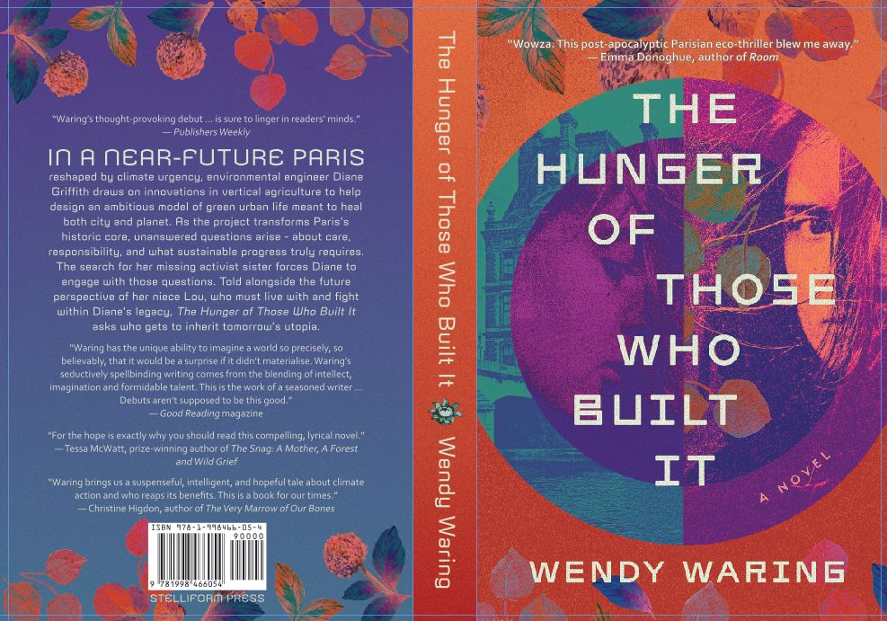

In this day-after-tomorrow tale of climate apartheid and second-chance redemption set in Paris, two sisters—their relationship tested by a dark family secret—face off as they battle climate catastrophe in very different ways. Hunger is the story of Diane Griffiths, a sustainability visionary with blinders, who wants to feed the world; Helen, her clandestine sister, who wants to change it; Alain, Diane’s lover, an engineer of history with a Parisian pedigree and a secret Maghreb heritage; and Lou, Diane’s niece and Helen's daughter, a queer rebel and a keeper of hope.
Buy this novel
from the publisher.
Or from your local bookstore.
Or, if you must,
here.
“Stonework” in Interzone, Issue 207, p 49–51. “…a wonderful window on an arcane universe” Paul J. Uitzi, TangentOnline.
“You’re memory” in Westerly. “The original fiction in this issue is a little disappointing, with the notable exception of Wendy Waring’s bijou, ‘You’re memory’.” Michael McGirr, Sydney Morning Herald.
“Au pays des merveilles” in Tesseracts10. Rosemary is just another pawn in the corporate game at New Story—the folks who beam fiction right into your brain. That is, until the ‘Book Worm’ leaves his antique paperback on the pneumotrain and she picks it up to return it. “A nice light read to warm the cockles of any booklover’s heart.” Alisa Krasnostein, AsIf.
“Sucker Hole” in Phase Change: New SF Energies ed. Matthew Chrulew.
“Alien Tears” in Anywhere but Earth , ed. Keith Stevenson.